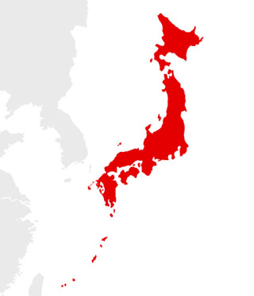
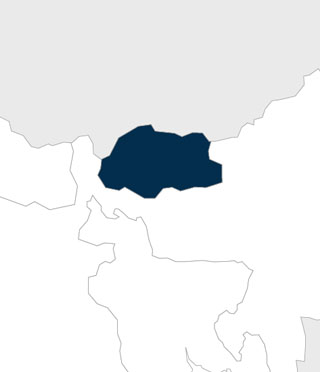
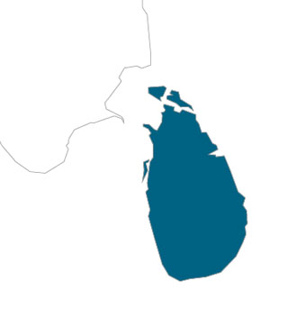
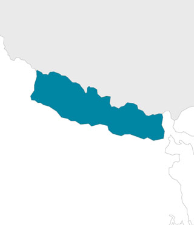
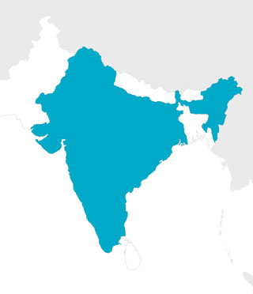
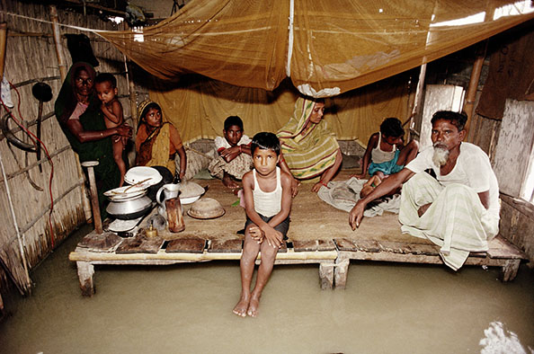
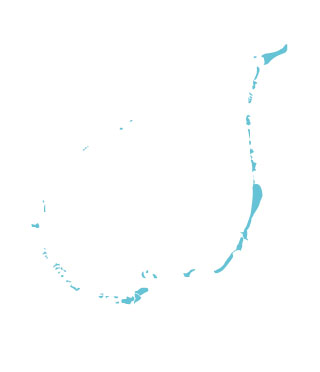
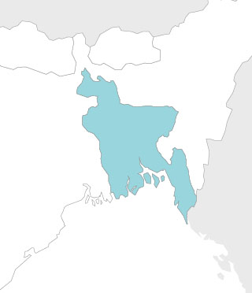
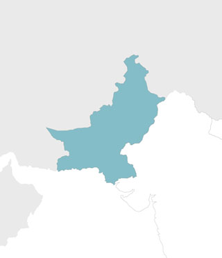
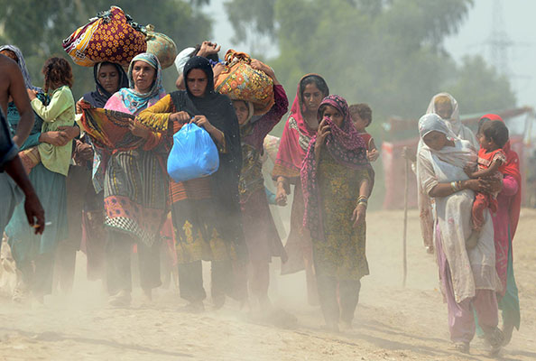

Japan
80.6
High-income, industrialised Japan included as a benchmark country to contextualise South Asian focus

Bhutan
46.4
Bhutan, Sri Lanka, Nepal, India, the Maldives and Bangladesh achieve an overall score in a relatively narrow band

Sri Lanka
45.9
Bhutan, Sri Lanka, Nepal, India, the Maldives and Bangladesh achieve an overall score in a relatively narrow band

Nepal
45.2
Bhutan, Sri Lanka, Nepal, India, the Maldives and Bangladesh achieve an overall score in a relatively narrow band

Case study
India
42.2
Bhutan, Sri Lanka, Nepal, India, the Maldives and Bangladesh achieve an overall score in a relatively narrow band

The disaster experiences of men and women

From January to March 2014, ActionAid held focus groups to understand how the impact of disasters differs for men and women.
Focus groups in Uttarkhand, India—which is prone to earthquakes, landslides and flash floods—revealed differing perceptions according to gender.
Men tend to face problems getting employment, while women typically lose sources of income from selling farm products.
According to women participants, their work in rearing livestock is also made more difficult by the destruction of fields and pathways.
Disasters typically bring a greater burden of work at home for women in caring for dependants.
Women also face challenges in acquiring and preparing food during disasters, and find it difficult to escape when disaster hits.
To read more about this case study, download the full report
Focus groups in Uttarkhand, India—which is prone to earthquakes, landslides and flash floods—revealed differing perceptions according to gender.
Men tend to face problems getting employment, while women typically lose sources of income from selling farm products.
According to women participants, their work in rearing livestock is also made more difficult by the destruction of fields and pathways.
Disasters typically bring a greater burden of work at home for women in caring for dependants.
Women also face challenges in acquiring and preparing food during disasters, and find it difficult to escape when disaster hits.
To read more about this case study, download the full report
Maldives
40.4
Bhutan, Sri Lanka, Nepal, India, the Maldives and Bangladesh achieve an overall score in a relatively narrow band

Bangladesh
40.0
Bhutan, Sri Lanka, Nepal, India, the Maldives and Bangladesh achieve an overall score in a relatively narrow band

Case study
Funding for community resilience

Most decision-making on budgets for disaster risk reduction is at the national level in South Asia.
Recognising an absence of incentives for disaster planning and resilience building at a local level, the Huairou Commission and civil society group GROOTS International set up the Community Resilience Fund.
Funding is directly channeled to women’s organisations for projects that build the resilience of disaster-prone communities.
In Bangladesh, a programme was set up to train 20 women leaders who went on to “map” risks and vulnerabilities from floods.
The women identified waterlogging and poor sanitation as problems that were exacerbated during flooding.
These findings were used for discussions with local officials to call for disaster risk reduction subsidies and training programmes.
To read more about this case study, download the full report
Recognising an absence of incentives for disaster planning and resilience building at a local level, the Huairou Commission and civil society group GROOTS International set up the Community Resilience Fund.
Funding is directly channeled to women’s organisations for projects that build the resilience of disaster-prone communities.
In Bangladesh, a programme was set up to train 20 women leaders who went on to “map” risks and vulnerabilities from floods.
The women identified waterlogging and poor sanitation as problems that were exacerbated during flooding.
These findings were used for discussions with local officials to call for disaster risk reduction subsidies and training programmes.
To read more about this case study, download the full report
Pakistan
27.8
Pakistan stands out for its limited progress but is developing some best-practice policies

Case study
The impact of purdah in preparing for floods

Early warning systems enable communities to mitigate the impact of disaster.
Evidence is emerging of programmes in South Asia where women are shaping early warning systems and activities.
This is the case in the flood-prone village of Kamra in Pakistan’s Punjab province, which has an early warning system managed by the community.
To ensure they were receiving crucial information on disaster risk, the women of Kamra established their own flood preparedness group. It addresses issues specific to living in purdah (female seclusion) in preparing for and responding to a flood.
The group has driven initiatives to mitigate women-specific risks during floods.
For example, it mobilised resources to construct a women-only community centre, which now serves as a safe shelter and a health clinic.
To read more about this case study, download the full report
Evidence is emerging of programmes in South Asia where women are shaping early warning systems and activities.
This is the case in the flood-prone village of Kamra in Pakistan’s Punjab province, which has an early warning system managed by the community.
To ensure they were receiving crucial information on disaster risk, the women of Kamra established their own flood preparedness group. It addresses issues specific to living in purdah (female seclusion) in preparing for and responding to a flood.
The group has driven initiatives to mitigate women-specific risks during floods.
For example, it mobilised resources to construct a women-only community centre, which now serves as a safe shelter and a health clinic.
To read more about this case study, download the full report